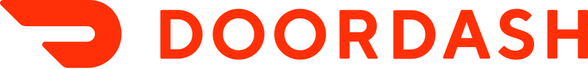

도어대시 DoorDash
도어대시(DoorDash)는 온라인 음식 주문과 배달을 운영하며 음식점·소비자·배달 기사를 연결하는 미국의 플랫폼 기업이다.
최종 업데이트

도어대시는 어떤 브랜드인가
회사는 미국 샌프란시스코에 본사를 두고 온라인 음식 주문과 배달 서비스를 운영한다. 미국 음식 배달 시장에서 56%, 편의용품 배달 부문에서 60%의 시장점유율을 기록한 최대 음식 배달 플랫폼이다.
2020년 12월 31일 기준 플랫폼에는 450,000개 가맹점과 20 million명의 소비자, one million명이 넘는 배달 기사가 참여했다. 2024년 Fortune 500에 처음 진입해 443위를 기록했다.
미국 밖에서는 직접 사업과 자회사 Deliveroo 및 Wolt를 통해 여러 국가에서 서비스를 운영한다.
도어대시는 어떻게 시작되고 성장했나
회사는 2012년 설립되었으며 Tony Xu가 창업자이다. 2013년 1월 Stanford University 학생 Tony Xu, Stanley Tang, Andy Fang와 Evan Moore가 캘리포니아주 팔로알토에서 PaloAltoDelivery.com을 시작했다.
같은 해 여름 Y Combinator로부터 지분 7%를 조건으로 US$120,000의 초기 자금을 받았고, 6월 DoorDash로 법인화했다. 2018년 12월 미국 음식 배달 총매출에서 Uber Eats를 넘어 2위에 올랐으며, 2019년 초에는 소비자 지출 기준 미국 최대 음식 배달 사업자가 되었다.
도어대시의 브랜드 아이덴티티는 무엇인가
음식 배달과 편의용품 배달에서 높은 미국 시장점유율을 확보하고 Deliveroo와 Wolt를 통해 운영 지역을 확장한 플랫폼이라는 점이 특징이다.
도어대시의 대표 제품과 서비스는 무엇인가
핵심 서비스는 음식점의 주문을 소비자에게 전달하는 온라인 음식 주문·배달 플랫폼이다. 2019년 10월 Redwood City에 네 음식점이 입점한 첫 ghost kitchen인 DoorDash Kitchen을 열었다.
2020년 11월에는 Burma Bites와 협력해 배달과 픽업 주문을 제공하는 첫 물리적 음식점 공간을 개설했다. 2023년에는 배달 기사에게 건별 보수 대신 활성 배달 시간에 적용되는 시간당 최저임금을 선택할 수 있도록 했다.
2025년에는 Ace Hardware와 제휴해 4,000개가 넘는 지점의 가정용 제품 배달을 제공하기로 했다.
도어대시는 지금 어떤 상태인가
회사는 DASH라는 종목 기호를 사용하며 2023년 9월 주식 상장을 Nasdaq으로 이전했고 같은 해 12월 Nasdaq-100 지수에 편입되었다. 2025년 Deliveroo를 $3.88 billion에 인수했으며, 결합 회사는 40개국에서 매월 50 million명의 이용자에게 서비스를 제공한다.
2026년 4월 기준 미국, 캐나다, 멕시코, 호주에서 직접 운영하고 Deliveroo와 Wolt를 통해 유럽과 그 밖의 여러 국가에서도 사업한다.
도어대시 로고는 어떻게 변해왔나
자주 묻는 질문
도어대시는 어느 나라 브랜드인가요?
도어대시는 미국의 식음료 브랜드입니다.
도어대시는 언제 설립되었나요?
도어대시는 2012년 설립되었습니다.
도어대시의 브랜드 아이덴티티는 무엇인가요?
음식 배달과 편의용품 배달에서 높은 미국 시장점유율을 확보하고 Deliveroo와 Wolt를 통해 운영 지역을 확장한 플랫폼이라는 점이 특징이다.
도어대시의 대표 제품은 무엇인가요?
핵심 서비스는 음식점의 주문을 소비자에게 전달하는 온라인 음식 주문·배달 플랫폼이다.
도어대시는 현재 어떤 상태인가요?
회사는 DASH라는 종목 기호를 사용하며 2023년 9월 주식 상장을 Nasdaq으로 이전했고 같은 해 12월 Nasdaq-100 지수에 편입되었다.
도어대시의 창업자는 누구인가요?
도어대시의 창업자는 Tony Xu입니다(위키데이터 기준).
도어대시의 본사는 어디에 있나요?
도어대시의 본사는 샌프란시스코에 있습니다(위키데이터 기준).
출처와 검증
도어대시 관련 참고: 공식 웹사이트 · 위키데이터 Q20714323 · 한국어 위키백과 · 영어 위키백과. 브랜드명은 한글과 원어를 함께 표기하되 데이터에 없는 표기는 만들지 않습니다. 기원 국가·설립연도는 검수된 정의문에서 확인된 값을 우선하고, 없을 때만 공식 웹사이트 URL이 일치하는 위키데이터 개체의 값을 씁니다. 위키데이터 값은 2026-09-12 기준입니다.